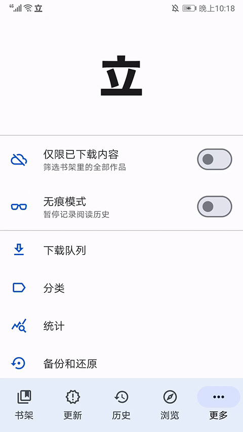
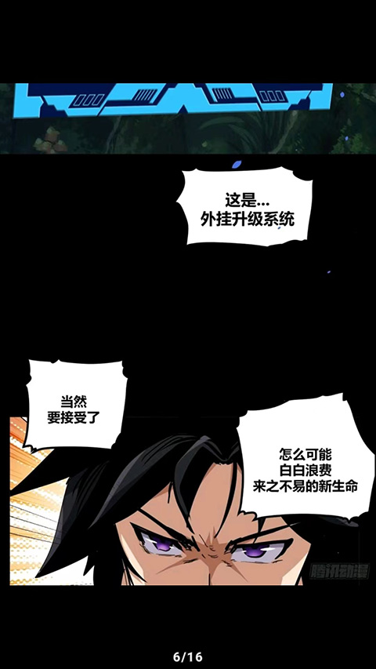

我用 Tachiyomi 搭了条漫画追更流水线——从分散刷站到全自动同步
以前追三十多本漫画要开十个源站、手动改 Bangumi 进度、换手机还丢书架。现在一条链串起聚合、更新、追踪、备份，每周省出三小时。
旧流程：每天花四十分钟，还经常漏更
我手机里常年挂着三十多本追更漫画，分布在不同的源站。两年前的日常是这样的：早上起来先刷 A 站那几本，再开 B 站刷一遍，遇到某站 App 崩了还要切到浏览器。三十本漫画分散在十来个源里，想查某本有没有更新，得一本一本点进去看——粗略算下来，每天大概花四十分钟在"找新章"这件事上。
更烦的是进度记录。我在 Bangumi 上有个漫画追更清单，以前每次读完新章都要手动打开 Bangumi App，找到对应条目，把已读章节数手动加一。这件事极其容易忘——读的时候爽，读完就关，等过了一周 Bangumi 上的进度和实际已经差了五六章，补起来格外痛苦。
换手机是另一个噩梦。去年换了台新安卓，旧手机上装了七八个漫画 App，每个 App 的书架都要单独导出、再单独导入。其中两个 App 根本没导出功能，我只能凭着记忆一本本搜回来。那折腾了一个晚上。
这三件事——分散刷站、手动追踪、换设备丢书架——构成了我看漫画的全部摩擦。我一直在找一个能串起这整条链的工具，直到朋友给我推荐了 Tachiyomi。
新流程：把 Tachiyomi 当流水线的中枢
Tachiyomi 是一个开源的漫画阅读器，它的官网上把自己定位成"Android 上最通用的漫画阅读器"。但对我来说，它真正的价值不在阅读器本身，而在它能把上面三个痛点一次解决。
我现在的工作流是这样的：多扩展聚合 → 自动更新检查 → 追踪服务同步 → 每周备份导出。整个链条里我唯一需要主动做的事就是打开 Tachiyomi 读新章，其他全都自动跑。
第一步：扩展聚合——十个源站收进一个书架
Tachiyomi 本身是个空壳，所有漫画源通过"扩展"接入。社区维护的扩展仓库里有几百个源，国内常见的几个漫画站基本都覆盖了。安装扩展的流程很简单：在浏览页添加一个社区仓库地址，Tachiyomi 会拉取扩展列表，点哪一个就装哪一个。
我现在装了七个扩展，覆盖了常看的所有源。每个源里搜到的漫画都可以加到同一个书架里，按分类打标签——"热血漫""日常番""完结待补"。书架变成了我所有漫画的单一入口，不用再切 App。

第二步：自动更新检查——每天帮我刷十遍源站
设置里开了自动更新，频率选的是每六小时一次，仅限 Wi-Fi 下。排除了"完结待补"分类——那些已经完结了不用再刷。更新检查的逻辑就是：Tachiyomi 依次请求我书架里每本漫画对应的源站接口，拿到最新章节列表，和本地记录对比，有差异就推到更新页顶部。
这样我早上起来打开 Tachiyomi，点底部的"更新"标签，所有有新章的漫画已经排好了。不用开十个源站逐个刷——Tachiyomi 在后台已经替我跑完了。
第三步：追踪服务同步——读完一章自动报 Bangumi
这是整条链最爽的环节。Tachiyomi 支持六七个追踪平台，我绑了 Bangumi 和 AniList。绑定过程是 OAuth 授权，在设置里选追踪 → 点 Bangumi → 浏览器弹出登录页 → 授权就行，凭证存在本地备份里。
绑定之后，任何时候我读完一章的最后一页，Tachiyomi 自动调用追踪服务的 API，把该漫画的已读章节数加一。不用我手动打开 Bangumi 改了。而且它是双向同步——如果我在 Bangumi 上手动改了进度，也可以让 Tachiyomi 拉回来覆盖本地。
自动同步的触发条件也不止"读完最后一页"：手动标记某章已读、在阅读器里跳到更靠后的章节号，这些行为都会触发同步。这套机制基本覆盖了我所有正常操作。
第四步：每周备份导出——换手机只需要五分钟
Tachiyomi 有内建的备份功能：设置 → 备份和还原 → 创建备份。备份文件是一个 JSON，包含所有书架条目、分类、阅读进度、扩展列表、追踪绑定凭证。我现在每周日晚上手动导一次，然后传到夸克网盘存一份。
上次换手机，我只需要在新手机上装 Tachiyomi——安装包从官方下载拿 → 从网盘下载备份文件 → 还原，整个过程不到五分钟。书架、进度、分类全回来了，连追踪绑定都不用重新授权——凭证跟着备份走的。
实操细节：最容易断链的两个环节
跑了这条流水线大半年，遇到过两个反复出现的问题。摸清楚怎么修之后，整个流程再也没卡过壳。
扩展加载失败：五步排查法
偶尔会遇到扩展列表空了、或者某个源的目录加载不出来。Tachiyomi文档里有一个五步排查流程，我按这个来没失手过。
第一步先查网络——社区仓库托管在 GitHub Raw，国内网络有时会慢。用手机浏览器打开仓库地址，如果浏览器也打不开就是网络问题，开代理或者换流量。第二步核对仓库 URL 有没有抄错——多一个空格少一个字母都不行，正确地址要和文档里的逐字对。第三步看 Tachiyomi 版本，太旧的版本对新扩展仓库格式不兼容。第四步更新 Android System WebView 组件，有些源站页面要靠它渲染。以上都没解决才走最后一步：清应用数据——但一定要先导出备份。
这套流程走一遍基本能定位问题。我把它截图存在手机备忘录里，每次遇到直接对照。
夜间阅读的亮度控制
睡前看漫画是我多年的习惯，但旧流程里每个漫画 App 的亮度调节都不一样，有的没有夜间模式，有的夜间模式做得很粗糙。Tachiyomi 在这块做得比我用过的所有漫画 App 都细。
它有三种全局主题：浅色、深色、AMOLED 纯黑。我用的深色主题，因为我手机是 LCD 屏，AMOLED 纯黑在我这没效果。但阅读器内部有独立的背景色设置——可以让 Tachiyomi 自动分析当前漫画页面的主色调，把阅读器背景调到协调的颜色。比如一本老漫画的页面是米黄色，阅读器背景自动变成相近的色调，不会在白底上显得突兀。
亮度方面，Tachiyomi 提供了独立于系统的"覆盖层亮度"——阅读器里侧边滑条可以直接调，只在 Tachiyomi 内部生效，退出就恢复系统亮度。我设成右侧滑条，睡前看漫画时拉一下就行，不用再拉 Android 的下拉栏。

效果与边界：省了三小时，但也不是万能
算一下时间账：以前每天四十分钟刷站，现在打开 Tachiyomi 直接进更新页读，这个动作压缩到五分钟以内。手动同步 Bangumi 的时间完全省了——每周大概能省四十分钟。换手机从一晚上变成五分钟。加起来每周省大概三小时，这个量级我是满意的。
但这套流程也有边界。首先，社区仓库在 GitHub Raw 上，国内网络不稳定时扩展加载会超时——这时候要么开代理，要么等网络好的时候再同步。其次，自动更新检查是轮询不是推送，六小时一次意味着理论上有六个小时的延迟——但漫画更新频率本身就低，这个延迟我完全可以接受。第三，原版 Tachiyomi 0.15.x 已经停更了，后续如果要跟新得迁到分支版本。
对我来说，这条流水线的真正好处不是"省了多少时间"，而是消除了心理负担。以前总记挂着"某本漫画今天有没有更新""Bangumi 进度是不是又忘改了"，这些碎片式的焦虑现在全部消失了。Tachiyomi 替我盯着所有源站、替我报进度、替我存着书架数据——我只需要打开它，读就好。
如果你也是一个同时追十本以上漫画的人，这套流程值得搭一次。扩展聚合、自动更新、追踪同步、定时备份，四个环节各自独立又互相咬合，任何一个断了都能单独修，不会拖垮整条链。整条流水线用到的配置和排障要点，我同步到了几个仓库——GitHub为主源，Gitee和GitCode做国内镜像，方便不同网络环境取用。